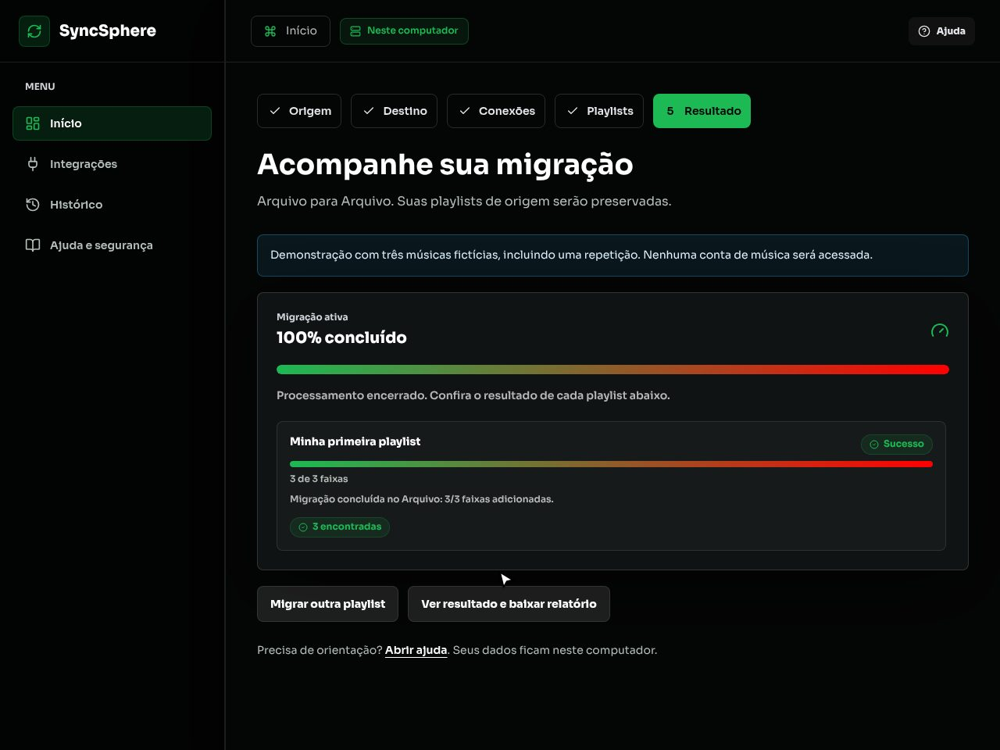

Move your playlists to another platform without rebuilding them by hand.
SyncSphere copies playlists between Spotify, YouTube Music, Deezer, TIDAL, Apple Music, SoundCloud and files. It runs on your computer, shows every track it finds and sets aside the ones that need your review.
Version . Free, open source, no sign-up.
Mac with an Intel processor? Use the Intel package.
- HorizonteBanda AuroraFound
- Perto do SolDuo NorteFound
- Noite Livre (live)Quarteto RotaTo review
- Maré AltaCoral LesteFound
- Cidade AcesaTrio VentoFound
Download
Pick your system. Each package includes everything the app needs: nothing else to install and no terminal commands.
Windows
macOS
Not sure? Open About This Mac from the Apple menu. If it lists a Chip such as Apple M1, it has Apple silicon.
-
Extract the whole folder
On Windows, right-click the file and choose Extract All. On Mac and Linux, double-click it. Do not open the app from inside the compressed file.
-
Open Iniciar
Use Iniciar.cmd on Windows, Iniciar.command on macOS or Iniciar.sh on Linux ("Iniciar" means start). The app opens in your browser.
-
Keep the window open
The Iniciar window is the app running. Close it only when your transfers are done. Its messages are in Portuguese; the app itself is in English.
Did Windows or macOS ask for confirmation?
The package is not signed by a registered developer yet, so the system asks for confirmation the first time.
Windows: under "Windows protected your PC", click More info and then Run anyway.
macOS: if the developer cannot be verified, open System Settings, go to Privacy & Security and click Open Anyway. Before macOS 15, right-click Iniciar.command and choose Open.
Only do this for packages downloaded from this page or from the project's Releases page.
To verify a download, compare its SHA-256 checksum with SHA256SUMS.txt. Older versions and release notes are on Releases. Prefer installing from source? Follow the installation guide.
How it works
The app guides each transfer in five steps. To look around without connecting any account, choose Try without accounts on the home screen.
- SourceWhere the playlists come from: a platform or a file.
- DestinationWhere they go.
- ConnectionsConnect only the platforms you chose. The app walks you through each one.
- PlaylistsSelect one or several, or paste a playlist link.
- OutcomeFollow every track, review the ones that were not found and download the report.

Before you start
Each platform has its own rules for letting an app work with your account. Here is what to expect.
- Spotify
- You create a free app in the Spotify developer dashboard and paste its Client ID into SyncSphere. Since February 2026, Spotify requires the account that owns that app to be Premium. The app shows each step.
- YouTube Music
- The connection uses your account cookie, copied from your browser and pasted into the app. The app shows where to find it.
- Deezer, TIDAL, Apple Music and SoundCloudExperimental
- Reading and writing are implemented and pass automated tests, but creating playlists has not been checked with real accounts yet. The app labels these writes as experimental.
- Files
- CSV, JSON, M3U and TXT work without any account, as source or destination. Useful for trying the app or keeping a copy of your playlists.
- Track lists, not audio
- SyncSphere copies the list of tracks and looks for each one on the destination. It does not download or upload audio files.
Everything stays on your computer
- No account, no project serverThe app talks directly to the platforms. Nothing goes through a SyncSphere server.
- Encrypted credentialsConnections and history are encrypted in the app folder. A password-protected backup moves everything to another installation.
- Open sourceMIT license. All the code is on GitHub for anyone to inspect or contribute.